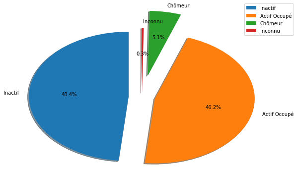
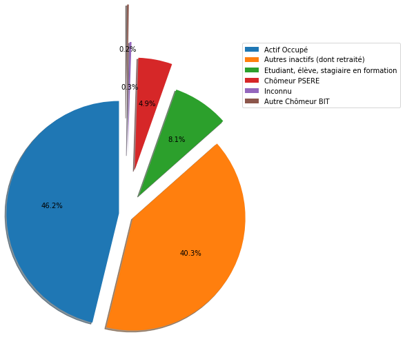
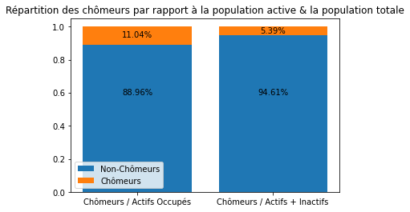
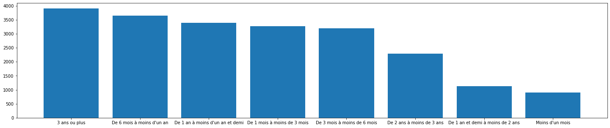
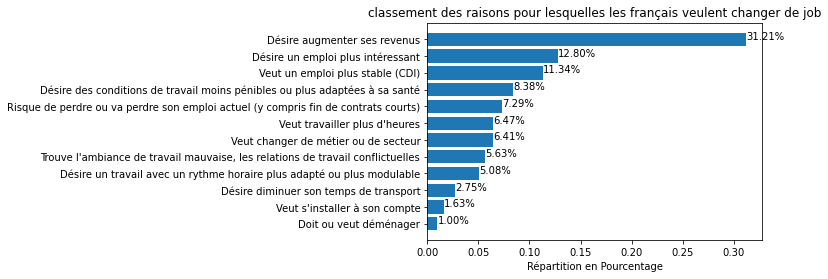

Comprendre le chômage en France
Vous êtes vous déjà demandé d’où sortaient les chiffres qu’annoncent les politiques ou les medias lorsqu’ils parlent de chômage. Étant un sujet d’intérêt dans les pays occidentaux, tentons de comprendre ce qu’il se passe en terme de chômages en France. Pour cela, nous avons récupéré des données sur data.gouv. Elles représentent les données du chômage en France en 2017.
Documentation du dataset
Regarder la documentation du dataset ici
Importez les librairies
pandasmatplotlib(et plus particulièrement le modulepyplot)
[1]:
import matplotlib.pyplot as plt
import pandas as pd
Chargez le fichier
fdeec17.csv
[3]:
dataset = pd.read_csv('../j1-data/fdeec17.csv')
dataset.head()
[3]:
| ANNEE | TRIM | CATAU2010R | METRODOM | TYPMEN7 | AGE3 | AGE5 | COURED | ENFRED | NFRRED | ... | DIP11 | CSTOTPRM | IDENTM | EXTRIAN | EMPNBH | HREC | HHCE | HPLUSA | JOURTR | NBTOTE | |
|---|---|---|---|---|---|---|---|---|---|---|---|---|---|---|---|---|---|---|---|---|---|
| 0 | 2017 | 1 | 1 | 1 | 2 | 50 | 50 | 2 | 1 | 1.0 | ... | 30.0 | 52.0 | 1 | 263.388752 | 37.0 | NaN | 37.0 | NaN | 5.0 | NaN |
| 1 | 2017 | 1 | 1 | 1 | 2 | 15 | 15 | 2 | 2 | 1.0 | ... | 42.0 | 52.0 | 1 | 263.388752 | 32.0 | NaN | 32.0 | NaN | 4.0 | NaN |
| 2 | 2017 | 1 | 1 | 1 | 2 | 15 | 15 | 2 | 2 | 1.0 | ... | 31.0 | 52.0 | 1 | 263.388752 | 38.0 | NaN | 38.0 | NaN | 5.0 | NaN |
| 3 | 2017 | 3 | 1 | 1 | 2 | 50 | 50 | 2 | 1 | 1.0 | ... | 30.0 | 52.0 | 2 | 176.893923 | 37.0 | NaN | 37.0 | NaN | 5.0 | NaN |
| 4 | 2017 | 3 | 1 | 1 | 2 | 15 | 15 | 2 | 2 | 1.0 | ... | 42.0 | 52.0 | 2 | 176.893923 | 40.0 | NaN | 32.0 | NaN | 4.0 | NaN |
5 rows × 125 columns
En faisant un pie-chart, montrez la part de chômeurs, d’inactifs et d’actifs occupés en France à partir de la variable ACTEU. Faites attention de faire apparaitre :
Le pourcentage de chaque partie
Une légende
[4]:
chomeurs = dataset['ACTEU'].apply(lambda x:
"Actif Occupé" if x==1
else "Chômeur" if x==2
else "Inactif" if x==3
else "Inconnu")
[5]:
# autre solution
chomeurs = dataset['ACTEU'].replace({1: "Actif Occupé", 2: "Chômeur", 3: "Inactif"}).fillna("Inconnu")
[6]:
chomeurs.unique()
[6]:
array(['Actif Occupé', 'Inactif', 'Chômeur', 'Inconnu'], dtype=object)
[7]:
pie_chart_data = chomeurs.value_counts()
pie_chart_data
[7]:
Inactif 207520
Actif Occupé 198054
Chômeur 21864
Inconnu 1204
Name: ACTEU, dtype: int64
[8]:
explode = (0.2, 0.2, 0.5, 0.1)
[9]:
plt.figure()
plt.pie(
pie_chart_data.values,
labels=pie_chart_data.index,
autopct='%1.1f%%',
shadow=True,
startangle=90,
explode=explode,
radius=1.5
)
plt.legend(bbox_to_anchor=(1.1, 1.05))
plt.show()

—> Le chiffre du chômage semble bas et, si on regarde l’explication des inactifs, celle-ci semble inclure beaucoup de monde (étudiants, personne ne cherchant pas d’emploi etc.)
Faites le même graphique sur la variable ACTEU6 qui est plus précise sur le type d’actifs
[10]:
dataset['ACTEU6'].unique()
[10]:
array([ 1., 6., 3., 5., nan, 4.])
[10]:
acteu6_cat = {
1: "Actif Occupé",
3: "Chômeur PSERE",
4: "Autre Chômeur BIT",
5: "Etudiant, élève, stagiaire en formation",
6: "Autres inactifs (dont retraité)"
}
[11]:
chomeurs = dataset['ACTEU6'].replace(acteu6_cat).fillna("Inconnu")
[12]:
# autre solution
chomeurs = dataset['ACTEU6'].apply(lambda x: acteu6_cat.get(x, "Inconnu"))
[13]:
pie_chart_data = chomeurs.value_counts()
pie_chart_data
[13]:
Actif Occupé 198054
Autres inactifs (dont retraité) 172921
Etudiant, élève, stagiaire en formation 34599
Chômeur PSERE 20854
Inconnu 1204
Autre Chômeur BIT 1010
Name: ACTEU6, dtype: int64
[14]:
plt.figure(figsize = (10, 5))
plt.pie(
pie_chart_data,
autopct='%1.1f%%',
shadow=True,
startangle=90,
explode=(0.1, 0.1,0.3,0.6,0.8, 1.3),
radius=1.5
)
plt.legend(pie_chart_data.index, bbox_to_anchor=(1.1, 1.05))
plt.show()

En créant un stacked bar chart, comparez :
le rapport chômeurs / Actifs occupés
Le rapport chômeurs / (Actifs occupés + Inactifs)
[15]:
# On recréé les données dont on a besoin
chomeurs = dataset['ACTEU'].replace({1: "Actif Occupé", 2: "Chômeur", 3: "Inactif"}).fillna("Inconnu")
chart_data = chomeurs.value_counts()
chart_data
[15]:
Inactif 207520
Actif Occupé 198054
Chômeur 21864
Inconnu 1204
Name: ACTEU, dtype: int64
[16]:
# On créé le rapport chômeurs / Actifs occupés et le rapport Chômeurs / (Actifs occupés + Inactifs)
chom_actif = chart_data['Chômeur'] / chart_data['Actif Occupé']
chom_actif_inactif = chart_data['Chômeur'] / (chart_data['Actif Occupé'] + chart_data['Inactif'])
data_chom = [chom_actif, chom_actif_inactif]
print(f"Rapports de chômeurs:\n {data_chom}")
Rapports de chômeurs:
[0.11039413493289708, 0.05390878113488537]
[17]:
# Pour la suite, on calcule le complémentaire des 2 rapports précédents
data_actifs = []
for ratio in data_chom:
data_actifs.append(1 - ratio)
print(f"Rapports d'actifs:\n {data_actifs}")
Rapports d'actifs:
[0.8896058650671029, 0.9460912188651146]
[18]:
# On créé une liste legend qui contiendra les deux categories :
## chômeurs / Actifs occupés
## Chômeurs / (Actifs occupés + Inactifs)
legend = ["Chômeurs / Actifs Occupés", "Chômeurs / Actifs + Inactifs"]
legend
[18]:
['Chômeurs / Actifs Occupés', 'Chômeurs / Actifs + Inactifs']
[19]:
# On créé deux bar charts qui seront superposés l'un à l'autre
## N'oubliez pas d'utiliser deux plt.bar()
## Pour créer les légendes, on peut utiliser plt.text()
## Pour créer un titre, on peut utiliser plt.set_title()
plt.figure()
plt.bar(legend, data_actifs, label="Non-Chômeurs")
plt.bar(legend, data_chom, bottom=data_actifs, label="Chômeurs")
plt.text(legend[0], 0.6, f"{data_actifs[0]:.2%}", ha="center", va="center")
plt.text(legend[0], 0.95, f"{data_chom[0]:.2%}", ha="center", va="center")
plt.text(legend[1], 0.6, f"{data_actifs[1]:.2%}", ha="center", va="center")
plt.text(legend[1], 0.975, f"{data_chom[1]:.2%}", ha="center", va="center")
plt.legend()
plt.title("Répartition des chômeurs par rapport à la population active & la population totale")
plt.show()

Il semblerait que le chômage représentait 11% de la population active (travailleuse) en France en 2017 selon le BIT
En créant à nouveau un bar chart, regardez cette fois la répartition de l’ancienneté du chômage. Le nom de la variable est ANCCHOM
[30]:
dataset['ANCCHOM'].unique()
[30]:
array([nan, 2., 3., 4., 1., 8., 7., 5., 6.])
[31]:
# On renomme les catégories de notre colonne
ancchom_cat = {
1: "Moins d'un mois",
2: "De 1 mois à moins de 3 mois",
3: "De 3 mois à moins de 6 mois",
4: "De 6 mois à moins d'un an",
5: "De 1 an à moins d'un an et demi",
6: "De 1 an et demi à moins de 2 ans",
7: "De 2 ans à moins de 3 ans",
8: "3 ans ou plus"
}
duree_chomage = dataset['ANCCHOM'].replace(ancchom_cat)
chart_data = duree_chomage.value_counts()
chart_data
[31]:
3 ans ou plus 3906
De 6 mois à moins d'un an 3648
De 1 an à moins d'un an et demi 3398
De 1 mois à moins de 3 mois 3270
De 3 mois à moins de 6 mois 3193
De 2 ans à moins de 3 ans 2289
De 1 an et demi à moins de 2 ans 1132
Moins d'un mois 902
Name: ANCCHOM, dtype: int64
[32]:
# On créé maintenant notre bar chart
plt.figure(figsize=(25, 5))
plt.bar(chart_data.index, chart_data.values)
[32]:
<BarContainer object of 8 artists>

La répartition se voit assez mal sur le bar chart, tentez de le refaire sur un pie chart
[23]:
plt.figure(figsize=(10, 5))
plt.pie(chart_data,
autopct='%1.1f%%',
shadow=True,
startangle=90,
radius=1.5)
plt.legend(chart_data.index, bbox_to_anchor=(1.1, 1.05))
plt.show()

Il serait intéressant de voir la répartition des personnes inscrites à Pôle Emploi ou dans un organisme de placement parmi ces personnes au chômage. Regardez cette répartition grâce à la colonne CONTACT
Enlevez directement les NaN de votre graphique
[24]:
# On renomme les catégories de notre colonne
contact = dataset['CONTACT'].dropna().replace({1: "Oui", 2: "Non"})
chart_data = contact.value_counts()
chart_data
[24]:
Non 15984
Oui 13144
Name: CONTACT, dtype: int64
[25]:
# On créé notre graphique
plt.bar(chart_data.index, chart_data.values)
plt.title("Inscription dans un organisme de placement")
plt.show()

Regardons ce qui pousse les français à changer d’emploi, grâce à la colonne CREACCP, crééz un bar chart horizontale qui va permettre de connaitre les principales raisons de changement d’emploi des français.
[26]:
# On renomme les catégories de notre colonne
creaccp_cat = {
1: "Risque de perdre ou va perdre son emploi actuel (y compris fin de contrats courts)",
2: "Désire un emploi plus intéressant",
3: "Veut un emploi plus stable (CDI)",
4: "Veut travailler plus d'heures",
5: "Désire un travail avec un rythme horaire plus adapté ou plus modulable",
6: "Désire des conditions de travail moins pénibles ou plus adaptées à sa santé",
7: "Désire augmenter ses revenus",
8: "Désire diminuer son temps de transport",
9: "Doit ou veut déménager",
10: "Veut s'installer à son compte",
11: "Veut changer de métier ou de secteur",
12: "Trouve l'ambiance de travail mauvaise, les relations de travail conflictuelles",
13: None
}
creaccp = dataset['CREACCP'].replace(creaccp_cat)
chart_data = creaccp.value_counts(ascending=True)
chart_data
[26]:
Doit ou veut déménager 216
Veut s'installer à son compte 354
Désire diminuer son temps de transport 598
Désire un travail avec un rythme horaire plus adapté ou plus modulable 1102
Trouve l'ambiance de travail mauvaise, les relations de travail conflictuelles 1223
Veut changer de métier ou de secteur 1392
Veut travailler plus d'heures 1404
Risque de perdre ou va perdre son emploi actuel (y compris fin de contrats courts) 1582
Désire des conditions de travail moins pénibles ou plus adaptées à sa santé 1820
Veut un emploi plus stable (CDI) 2462
Désire un emploi plus intéressant 2779
Désire augmenter ses revenus 6775
Name: CREACCP, dtype: int64
[27]:
# Nous avons besoin de faire une répartition par pourcentage
# Calculons donc le nombre total de répondants
s = chart_data.dropna().sum()
print(s)
21707
[28]:
# Calculons maintenant la répartition de chacune des réponses
repartition = chart_data.values / s
print(repartition)
[0.00995071 0.0163081 0.02754872 0.05076703 0.05634127 0.06412678
0.0646796 0.07287972 0.08384392 0.11341963 0.12802322 0.3121113 ]
[29]:
# Créons maintenant le graphique
plt.title("classement des raisons pour lesquelles les français veulent changer de job")
plt.barh(chart_data.index, repartition)
plt.xlabel("Répartition en Pourcentage")
for i in range(len(repartition)):
plt.text(repartition[i], chart_data.index[i], f'{repartition[i]:.2%}')
plt.show()

[ ]: